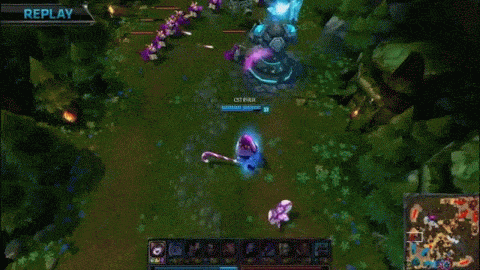

Policy Recommendations: A Step Forward.

(Via KeSPA / OnGameNet / Riot Games)
Emphasis on Holistic Benefit
With a market as complicated as LoL eSports, there are multiple parties involved at every level and in every agreement. Policies that focus only on benefitting players are likely to harm teams and Riot (and vice versa). Obviously, some policies are needed that will most definitely only benefit one involved party. However, the all following recommendations made are intended to optimize benefits for everyone where possible.
(via Riot Games)
The Policies
The following policies are not by any means perfect, in any way tested, or listed in an order of any sort of significance. These are simply propositions that are based on my own research and precedents set by players associations in traditional sports. Some if not all of these policy recommendations could be implemented and enforced through a collective bargaining agreement between Riot and LCS players, following their financial re-taking of the NALCSPA.
- Require Riot Games and LCS Teams to Classify LCS Players as Employees.
As has been discussed in the union portal, LCS players are employees of Riot Games and LCS teams under California labor code. Requiring Riot and teams to recognize LCS players simply ensures that they will receive the employee benefits they deserve. It will allow LCS players to easily create a union, rather than having to potentially bring costly litigation for all parties against Riot.
- Create a Fund to Buyout the NALCSPA.
If players hope to improve their working conditions and player contracts, they will need to establish an NLRA-recognized union. However, because player careers are currently so short, they cannot afford to sacrifice financial gains to try and run a players union. Acquiring the funds to pay for the operating costs of a union (so that players can take time off from competing to run it) is therefore paramount. No single group of LCS players would likely be able to continuously fund a union effort by themselves, so an LCS-wide effort would be the most effective. This could be done by creating a sort of "union tax" on LCS salaries that would be scaled up depending on salary (using a progressive bracket system, similar to income tax in the U.S.) to support operating costs and salaries for certain elected players (maybe even using the current NALCSPA executive board) to temporarily retire and run the union. The long-term benefits LCS players would gain from unionizing and collectively bargaining with Riot would far outweigh than the short-term costs.
- Establish an Appeals Process for Competitive Rulings.
The current status quo where Riot Games has full executive control over competitive rulings—to the extent where they can financially harm owners, players, and coachs without evidence review or an appeals process—is completely unacceptable. I do believe that Riot should be able to regulate their own eSport (especially since copyright ownership currently creates far too many issues for independent eSports regulatory organizations), but within reasonable limits. Similar to traditional sports, Riot should be required to allow appeals for any and all rulings (this would be included in a CBA, discussed later). I would recommend that Riot base their appeals process off of the NHL, which has been considered the "king" of fair disciplinary procedures in traditional sports.
- Create Reliable and Lengthy Intervals between Significant Patches.
It is understandable that Riot wants to update its game frequently to balance gameplay and retain an interested player base. However, LCS player and team needs are legitimate as well. Creating an environment where players and teams must scramble to stay up-to-date is bad for league stability and player/team financial well-being. It is difficult to seriously improve at anything or rationalize practice breaks when the skills required change every week. If Riot were to be held to releasing patches at a set interval, both professional and nonprofessional players would know what to expect and could adjust their gameplay accordingly. Even if a new patch includes significant changes, players would be able to acquire new, usable skills before the patch was replaced without overworking. This would allow for players to create more entertainment and sponsored content (jumping off of Doublelift's argument) which will bring more popularity and revenue to players, teams, and League of Legends itself. Of course, game-breaking issues can be hotfixed and patched at anytime, but significant, non-bug related changes that affect 5v5 Summoner's Rift gameplay would only be allowed to be included in the reliable patch schedule.
- Set Practice Caps on LCS Player Schedules.
A work environment filled with 12-14 hours of daily practice, six to seven times a week is not only unsustainable but is borderline labor abuse. Young players have limited inherent physical restrictions on practicing and their competitive nature (as well as the competitive culture of the LCS) will drive them to overwork themselves and likely become injured. Forcing LCS teams and players to limit their practice to more manageable hours (let's say, a 10 hour daily cap for example with one day a week where players are not permitted to practice) will allow for players to produce more entertainment content and acquire more sponsorships, leading to similar benefits to patch schedule changes. It will also allow them to prioritize working optimally rather than wasting any time. This should make practices and scrims far more efficient and effective for all parties. If patching is set on a consistent schedule like advocated for above, this becomes far more feasible as players will need to adjust the skills they are working on far less frequently.
- Require LCS Teams to Release Salary Information.
Whether publically or privately, LCS and aspiring-LCS players must be able to know their value. An 18 year-old with no prior work experience is more likely than not to have no idea how to estimate personal work value or industry standards, especially in a market with so many various revenue streams and benefits (sponsorship, salary, housing benefits, etc.). LCS players have nothing to lose from public salary information, while LCS teams will only be forced to up their salaries if it is discovered that they are underpaying players relative to the industry standard. There are concerns that public salary databases would simply inflate salaries, but I believe the benefits outweigh the costs. The teams that would have to inflate their salaries could easily release revenue/cost information to show why salaries are overly inflated if needed.
- Require all LCS Teams to Use Universal Player Contracts (UPCs)
In traditional sports, UPCs are very common and serve to standardize the benefits that players receive to ensure that no player is undercut or given benefits below the industry average. This would be extremely helpful for incoming players and those without agent representation, as they can at least be guaranteed to receive a certain caliber of benefits regardless of their negotiation ability or industry knowledge.
These recommendations are examples of the type of changes that are currently needed in the LCS. If any of them were implemented, they would help to improve the well-being of LCS players immensely.